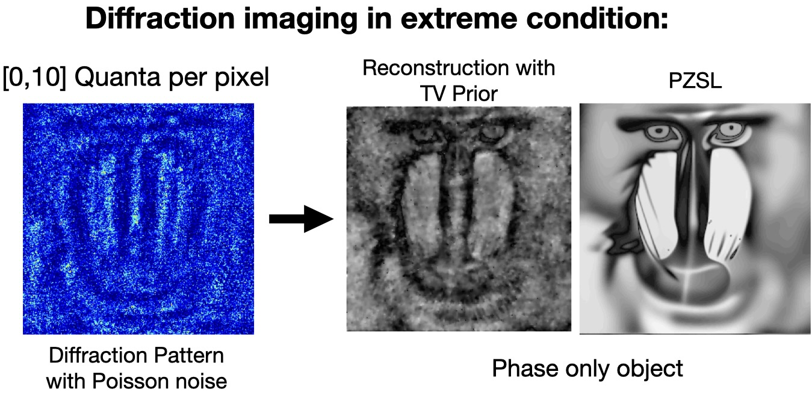

Phase Retrieval with Physics Informed Zero-shot Network
An algorithm to retrieve phase from a single diffracted intensity image. Algorithm combines the state-of-art reconstruction ability of deep learning and the excellent generalization of physical model based methods. Shown below is a phase image of some unstained human cells cultured on a PDMS medium. Unstained cells are nearly transparent. Imaging hardware setup is same as this project but the reconstruction is obtained using this novel computational framework. For more details and results, check this link.

Epithelial cells reconstructed from lensless hologram